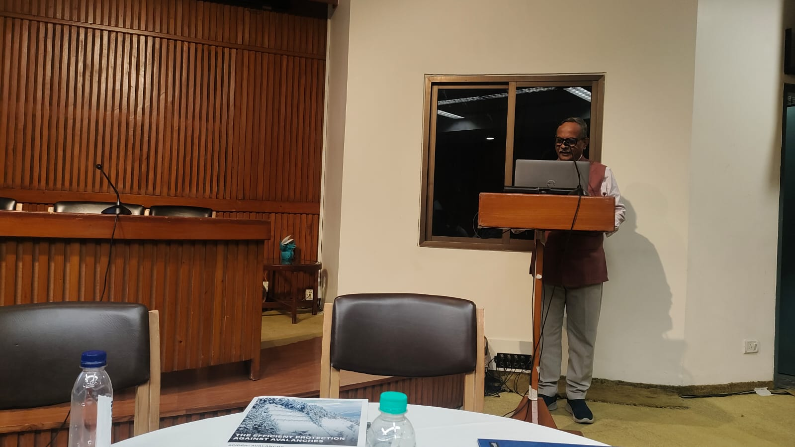

Integrating high-resolution Earth Observation with deep time stratigraphic records to decode the complex evolution of Earth's landscapes, from the pulse of Himalayan rivers to the critical dynamics of modern soil and water systems.

For research collaborations, PhD inquiries, or academic consulting:
rsinha@iitk.ac.in303B Western Laboratory Extension, Department of Earth Sciences, IIT Kanpur, Kanpur-208016,INDIA